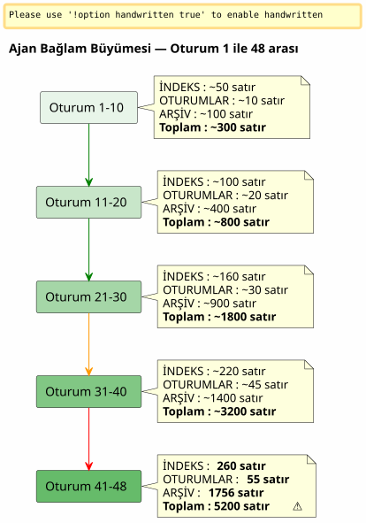

Sliding Window ve Soğuk Dalga: Ajan Bağlamı Patladığında ve Kayıpsız Arşivleme Gerektiğinde
Yayınlandı: 26 April 2026
Özet
Tek bir projede 48 oturum ve toplamda 150’den fazla oturumun ardından, özenle oluşturduğum Eager/Lazy yönetişim sistemi tıkanmaya başlamıştı. Hafif olması gereken ajan dosyaları, toplamda 5200 satıra ulaşmıştı. Otomatik yüklenen bağlam, onu kontrol etme kapasitemden daha hızlı artıyordu. Bu yazı, hiçbir şeyi kaybetmeden aktif bağlamı hafif tutmak için sliding window ve identical cold wave arasında bir yedekleme mekanizmasını nasıl kavramsallaştırdığımı anlatıyor.
Sinyal: 5200 Satır
048` numaralı oturumun ortasındayım`magic-stick`, canlı Linux ISO build projem. Opencode beni izliyor. Her zamanki gibi, oturum başında Eager dosyalarımı otomatik olarak yükledi —AGENT.adoc, PROMPT_REPRISE.adoc, .agents/INDEX.adoc. Anormal bir durum yok.
Ancak bir şeyler ters gidiyor. Yanıtlar daha yavaş. Muhakeme daha yüzeysel. Agent, iki mesaj önce gözünün önünde olan ayrıntıları unutuyor.
Bir terminal açıyorum ve şunu yazıyorum:
wc -l .agents/INDEX.adoc .agents/SESSIONS_HISTORY.adoc \
.agents/archives/COMPLETED_TASKS_ARCHIVE_2026-04.adocINDEX için 260 satır. SESSIONS_HISTORY için 55 satır.COMPLETED_TASKS_ARCHIVE için 1756Lütfen çevrilecek metni sağlayın.
Dosya`sessions/`yaklaşık ~3200 satır daha ekliyor. Toplam:5200 satırbir şekilde ajanın geçici beynine yüklenen bağlamlar.
Önceki makalede teorize ettiğim Eager/Lazy stratejisi çalışıyor — ancak öngörmediğim doğuştan gelen bir kusuru var: oyaşlanma mekanizması yok. Her oturum INDEX’e bir satır, COMPLETED_TASKS’e bir paragraf, sessions/ klasörüne bir dosya ekler. Hiçbir şey dışarı çıkmaz. Bağlam, her yeni oturumda büyüyen bir kartopu gibidir.

Bu bir hata değil, her detayı titizlikle arşivleyen oturum kapatma prosedürünün doğrudan bir sonucudur. Sistem kendi başarısının kurbanı olmuş durumda.
Tanı: Üçlü Yedekleme
Acentten sorunu teşhis etmesini istiyorum. Yanıtı anında ve nokta atışıdır.
Dosya |
Satırlar |
Rol |
Sorun |
|
260+ |
EAGER (otomatik yüklendi) |
001’den itibaren tüm oturumların tablosu —oturum başına +1 satır |
|
55 |
İSTEKLİ |
Özet Tablo —INDEX ile gereksiz tekrarlanma |
|
1756 |
EAGER (örtük) |
Nisan ayındaki tüm oturumların tam detayları |
|
toplam ~5200 |
LAZY (varsayılan) |
Kişisel arşivler, ancakkullanılmayanlarçünkü her şey zaten |
Ajan dört kök neden belirler:
-
COMPLETED_TASKS_ARCHIVE her şeyi kapsar— Arşivlere yönlendirmek yerine`.sessions/`, her bir oturumu eksiksiz bir şekilde kopyalar.
-
INDEX.adoc tam bir geçmiş görevi görür— "Son Sessizleri" tablosu 30’dan fazla giriş içeriyor.
-
SESSIONS_HISTORY.adoc` gereksiz— INDEX ile aynı bilgi, farklı format.
-
LAZY kuralına uyulmamış— COMPLETED_TASKS, her şeyi içerdiği için örtük olarak EAGER’dır.
Önerisi radikal: `INDEX’i 10 oturumla sınırlamak, `COMPLETED_TASKS’i boşaltmak, `SESSIONS_HISTORY’yi tamamen `LAZY’ye taşımak. Anlık kazanç:~1900 satır tasarruf edildiLütfen çevrilecek metni sağlayın.
Temiz, etkili ve mantıklı. Ancak bu yaklaşımla ilgili bir sorunum var.
Belirgin Çözümü Neden Reddettim
Aracının çözümü, bir önbelleği optimize eden bir mühendisin çözümüdür. Sınırlandırmak. Kırpmak. Gereksiz tekrarları kaldırmak.
Ancak bu "redondances" aslında öyle değildir. Her yönetişim dosyası birfarklı açıaynı gerçeklik üzerine:
-
İNDEKS= makro görünüm, yönetici paneli
-
OTURUM_GEÇMİŞİ= doğrusal, skorlanmış kronolojik tablo
-
TAMAMLANMIŞ_GÖREVLER_ARŞİVİ= metriklerle birlikte detaylı anlatım
-
sessions/*.adoc = bireysel arşivler, tam bağlam
Bu basit bir kopyalama değil. Bu,yapılandırılmış çoklu perspektif. Damıtma işlemi için tam olarak ihtiyacımız olan şey bu; böylece daha sonra bir insan (veya gelecekte daha iyi eğitilmiş bir LLM) farklı açılardan karşılaştırma yapabilir ve örüntüler çıkarabilir.
Size bir şöyle diyen bir veri bilimcisi hayal edin: « 6 sütundan 3’ünü silelim, bunlar korele.» Ona ne cevap verirsiniz? Her sütun aynı fenomenin farklı bir boyutunu yakaladığında, korelasyonun yedeklilik olmadığına. Veri setini kullanılabilir kılanın tam olarak bu boyutsal zenginlik olduğuna.
Bu benim sezgim. Ve onu ajanın soğuk rasyonelliğine karşı savunuyorum.
Lütfen çevrilecek metni sağlayın. Fikrimde sessiz bir "her şeyi içine alan torba" (fourre-tout) görmüyorum. Her şeyi rastgele doldurmuyoruz; oturum sonlandırma prosedürünün yapılandırılmış sonucunu taşıyoruz — her dosya kendi açısıyla, aslında bir zenginleştirme olan kendi yedeklilikleriyle birlikte. Distilasyon için daha iyi olan, bu çok boyutlu materyal olacaktır. Lütfen çevrilecek metni sağlayın.
Ajan darbeyi hissediyor. Ve kendini düzeltiyor.
Öneri: Özdeş Soğuk Dalga
Ajan, zengin veri seti sezgime sadık kalırken aynı zamanda şişen bağlamyla ilgili teknik sorunu çözen daha hassas bir mekanizma öneriyor.
İlke basit ve doğrudan pattern’dan esinlenmiştirSıcak/Ilık/Soğuk Depolamaarşiv yönetimine uygulanmış:
-
Sıcak (EAGER)= INDEX’deki son 10 oturum, N+1 oturumunun PROMPT_REPRISE’ı, son 2 oturum dosyası
-
Sıcak (LAZY)= son SESSIONS_HISTORY, SCRIPT_VERIFICATION, tüm referans dokümantasyonu
-
Soğuk (backup/)= geri kalan her şey, taşındıbozulmamış, dönüştürme olmadan, yeniden indeksleme olmadan
----
.agents/
├── INDEX.adoc → Sessions N-9 à N (10 dernières)
├── SESSIONS_HISTORY.adoc → Sessions N-9 à N
├── SCRIPT_VERIFICATION.adoc → Dernière vérif (pas d'historique)
├── PROMPT_REPRISE.adoc → Session N+1 uniquement
├── sessions/ → Sessions N-1 à N uniquement
└── backup/
└── Y2026-sessions-001-039/ ← Vague froide, COPIE INTÉGRALE
├── INDEX.adoc → Sessions 001 à 039 (complet)
├── SESSIONS_HISTORY.adoc → Sessions 001 à 039 (complet)
├── COMPLETED_TASKS_ARCHIVE.adoc → Sessions 001 à 039 (complet)
└── sessions/ → 001.adoc, 002.adoc...
----
Mekanizmanın anahtarı:**yedekleme merkezi bir dizin değildir, geçmiş dalganın birebir kopyasıdır**. 10 aktif oturum ufku aşıldığında, hiçbir şey silinmez. Hiçbir şey yeniden indekslenmez. Hiçbir şey birleştirilmez. Ajan dosyaları paketi N-10. oturumda olduğu gibi alınır ve şuraya taşınır:`backup/`Lütfen çevrilecek metni sağlayın.
Aktif dosyalar ise kesilir:
* İNDEKS : sadece son 10 satır (kayan pencere)
* SESSIONS_HISTORY : aynısı
* COMPLETED_TASKS_ARCHIVE : mevcut dönem için yeni dosya
* sessions/ : yalnızca son 2 oturum
[plantuml, format=svg, id=diag-hot-warm-cold, alt="Architecture Hot/Warm/Cold du contexte agent — EAGER/LAZY/backup"]
----
@startuml
skinparam backgroundColor #FEFEFE
skinparam defaultTextAlignment center
skinparam wrapWidth 200
title Ajan Bağlamının Hot / Warm / Cold Mimarisi
package "HOT (EAGER)\nOtomatik yüklendi\n~300 satır" as HOT #FFCDD2 {
file "INDEX.adoc\n(10 oturum)" as IDX_HOT
file "PROMPT_REPRISE\n(oturum N+1)" as PRO_HOT
file "AGENT.adoc\n(kesin kurallar)" as AG_HOT
}
package "WARM (LAZY)\nİstek üzerine yüklendi\n~500 satır" as WARM #FFF9C4 {
file "SESSIONS_HISTORY\n(son 10)" as HIS_WARM
file "SCRIPT_VERIFICATION\n(sonuncu)" as VER_WARM
file "PROCEDURES.adoc\n(şablonlar)" as PRO_WARM
file "*_REFERENCE.adoc\n(teknik doküman)" as REF_WARM
}
package "COLD (backup/)\nAsla yüklenmez\nYalnızca insan okuması için" as COLD #BBDEFB {
folder "Y2026-001-039/" as WAVE {
file "INDEX (tam)" as IDX_COLD
file "SESSIONS_HISTORY\n(tam)" as HIS_COLD
file "COMPLETED_TASKS\n(tam)" as ARCH_COLD
folder "sessions/ (001-039)" as SESS_COLD
}
folder "Y2026-040-???\n(gelecek)" as FUTURE
}
HOT --> WARM : "Ajan gerekirse\ngeri çağırır"
WARM --> COLD : "Asla otomatik değil\nİnsan tek başına gider"
note bottom of COLD
Kural: TAM KOPYALAMA
Dönüştürme yok
Yeniden indeksleme yok
Arşivlemeden sonra salt okunur
end note
@enduml
----
Anlık kazanç muazzamdır: EAGER bağlamı şundan şuna geçer:**~5200 satırdan ~300 satıra**. 17'ye bölünme. Tek bir tarihsel veri satırı dahi kaybetmeden.
== Neden Bir Her Şey Çantası Değildir
Ajan, ilk yinelemesinde, şundan korkuyordu ki`backup/`bir kara kutuya — bir daha asla okunmayacak dosyaların atıldığı bir klasöre dönüşmesi. Bu haklı bir korku. Ancak bir karmaşaya dayanıyor.
Bir "her şeyi içine atan klasör" (fourre-tout), dosyaların rastgele atıldığı yerdir**yapısız, kuralsız, gruplandırma mantığı olmaksızın**. Burada, yedekleme dönemlere göre (Y2026-001-039) yapılandırılmıştır ve her yedekleme klasörü şunları içerir**aynı yapı**klasörün`.agents/`aktif: INDEX, SESSIONS_HISTORY, COMPLETED_TASKS_ARCHIVE, sessions/.
Bu bir her şeyi içine alan torba değil. Bu bir**zaman damgalı anlık görüntü**Hatta bunun basitleştirilmiş bir versiyonlama mekanizması olduğu söylenebilir; tek fark, dosyaları tek tek değil, yönetişimin belirli bir andaki tüm paketini versiyonlamasıdır.
Eski bir bilgiyi geri getirmek istediğinizde, merkezi bir dizine ihtiyacınız yoktur. İki seçeneğiniz var:
1. **hedefli `grep**Lütfen çevirmek istediğiniz metni girin.`grep -r "zsh" backup/Y2026-001-039/`— ve belirtilen zaman diliminde, bakış açısı ne olursa olsun (INDEX, SESSIONS_HISTORY, oturum arşivi), zsh ifadesinin geçtiği her şeyi bulursunuz.
2. **Manuel yeniden entegrasyon**: yedek klasörünü geçici olarak aktif bağlama kopyalarsınız ve ajandan bu özel dönemi analiz etmesini istersiniz.
İndeks örtüktür. Dosyaların kendi yapısındadır — her biri zaten kendi açısından bir indekstir.
== Raflar Metaforu
Mekanizmayı sezgisel hale getirmek için onu üç raf şeklinde kavramsallaştırdım:
* **Raf 1 (EAGER)**— çalışma planı. *Şu an* ihtiyacım olan şey. Güncel INDEX, PROMPT_REPRISE, kesin kurallar. Hafif, anlık, kritik.
* **Raf 2 (LAZY)**— danışma kütüphanesi. Talep üzerine gidip alabileceğim şeyler. Teknik referanslar, yakın geçmiş, prosedürler. Daha hacimli ancak belleğe yüklenmiş değil.
* **Cave (backup/)**— soğuk arşivler. Geçmiş olan ama atmak istemediğim her şey. Ajan oraya asla girmez. İnsan, damıtma yapmak istediğinde oraya iner.
Acente başlangıçta dördüncü bir raf önerdi — bir`index-backup.adoc`LAZY olan ve tüm yedeğin bir içindekiler tablosunu içeren bir yapı olurdu. Reddettim. Bu, halihazırda doğrusal büyümeden muzdarip bir sistemde bir fazlalık daha olurdu. Arşivlenen dosyaların yapısı zaten bir indekstir.
== İki Tetikleyicili Sensör
Kavramsallaştırma sağlamdı ancak bir kör nokta kalmıştı:**rotasyon tam olarak ne zaman tetiklenmeli?**İlk makale bunu açık bir soru olarak tanımlamıştı. İki gün sonra, yanıt altı projenin yönetişim dosyalarında kodlanmış durumdaydı: iki tetikleyicili bir sensör.
=== Otomatik Tetikleyici — `N % 10 == 0
İlk tetikleyici matematiktir. Oturum numarası 10'un katı olduğunda — 10, 20, 30, 40. oturumlar — yedekleme rotasyonu, oturum sonlandırma prosedürü dahilinde, 6. adımdan hemen sonra otomatik olarak yürütülür.
Neden 10? Bu, iki zıt güç arasındaki uzlaşmadır: Çok kısa bir pencere (5 oturum), süreklilik için gerekli olan bağlamı kaybeder; çok uzun bir pencere (20 oturum) ise bağlamın şişmesi sorununu çözmez. Günde bir ila iki oturumluk bir tempoda, on oturum yaklaşık bir haftalık çalışmayı kapsar — bu, aracının son kararları hatırlaması için yeterli, ancak bağlamın patlaması için yetersizdir.
=== Eşik Tetikleyici — 500 Satır EAGER
İkinci tetikleyici dinamiktir. Oturum numarasından bağımsız olarak, birikmiş EAGER dosyaları şunları aşarsa**500 satır**, dönme işlemi tetiklenir.
Bu eşik, oturumların olağanüstü üretken olduğu — az sayıda oturumda çok fazla içerik yazıldığı — senaryoya karşı koruma sağlar. 120 satırlık editöryal içerik üreten bir oturum, COMPLETED_TASKS_ARCHIVE'ı, iki satırı düzelten bir hata ayıklama oturumundan çok daha hızlı büyütür. Şunun aracılığıyla ölçülen 500 satırlık eşik,`wc -l .agents/INDEX.adoc .agents/archives/COMPLETED_TASKS_ARCHIVE_*.adoc PROMPT_REPRISE.adoc`, bu asimetriyi yakalar.
=== Manuel Tetikleyici — "rotation backup
Son olarak, kontrol insanda kalıyor. Anahtar kelimeler`rotation backup`, `backup rotation` ou `lance la rotation backup`oturum sonundan bağımsız olarak, talep üzerine prosedürü tetiklerler. Bağlamın ağırlaştığı hissedildiğinde ancak henüz 10'un katına gelinmediğinde veya yeni bir aşamaya başlamadan önce mevcut çalışma aşaması arşivlenmek istendiğinde kullanışlıdır.
[plantuml, format=svg, id=diag-capteur-trigger, alt="Les trois déclencheurs du capteur de rotation backup — automatique, seuil, manuel"]
----
@startuml
skinparam backgroundColor #FEFEFE
skinparam defaultTextAlignment center
skinparam wrapWidth 200
title Yedek Dönüş Sensörü — Üç Tetikleyici
start
:Procédure de fin de session;
note right: Mots-clés "oturum sonu"\nou "burada duruyoruz"
:Étapes 1 à 6\n(archivage standard);
note right
1. Oturumları arşivle/N.adoc
2. PROMPT_REPRISE GÜNCELLEME
3. SESSIONS_HISTORY GÜNCELLEME
4. INDEX.adoc GÜNCELLEME
5. TEST_COVERAGE GÜNCELLEME
6. COMPLETED_TASKS GÜNCELLEME
end note
if (N % 10 == 0\nOU\nEAGER cumulé > 500 lignes ?) then (oui)
:⚙️ Rotation Backup\n(étape 7);
note right
1. backup/Y20XX-sessions-X-Y/ oluştur
2. INDEX + HISTORY + COMPLETED_TASKS + sessions/ içeriğini tamamen kopyala
3. Aktifleri 10 oturumla sınırla
4. _Aktif Konum_ ekle
end note
else (non)
:Pas de rotation;
endif
:Checklist [✅] x 7\n(si applicable);
stop
@enduml
----
Bu diyagram, sensörün oturum sonlandırma prosedüründeki tam yerleşimini göstermektedir. 7. adım isteğe bağlıdır — yalnızca iki koşuldan biri doğruysa yürütülür — ancak sistematik olarak *kontrol edilir*. Final kontrol listesi şunları içerir`[✅] 7. Backup roté (si applicable)`Lütfen çevrilecek metni sağlayın.
=== Kapalı Döngü
Bu sensör, önceki makaledeki açık döngüyü kapatır. Eager/Lazy yönetişimi, iki oturum arasındaki ajan bellek sorununu çözmüştü. Hot/Warm/Cold mekanizması, büyüyen bellek sorununu çözdü. İki tetikleyicili sensör ise *ne zaman* sorununu çözerek, bağlam boyutunu izleme zihinsel yükünü insanın üzerinden alır.
[plantuml, format=svg, id=diag-boucle-fermee, alt="Les trois couches de la gouvernance agent — Eager/Lazy, Hot/Warm/Cold, Capteur"]
----
@startuml
skinparam backgroundColor #FEFEFE
skinparam defaultTextAlignment center
title Ajan Yönetişiminin Üç Katmanı
left to right direction
package "Katman 1 — Bellek\n(Madde 0108)" as C1 #E8F5E9 {
rectangle "**EAGER**\nKontrol paneli\nOtomatik yüklendi" as EAG
rectangle "**LAZY**\nKullanım kılavuzu\nİstek üzerine yüklendi" as LAZ
EAG -[hidden]right-> LAZ
}
package "Katman 2 — Eskime\n(Madde 0110)" as C2 #FFF9C4 {
rectangle "**HOT**\n10 aktif oturum\n~300 satır" as HOT
rectangle "**WARM**\nReferanslar\nProsedürler" as WRM
rectangle "**COLD**\nbackup/\nSoğuk dalga" as CLD
HOT -[hidden]right-> WRM
WRM -[hidden]right-> CLD
}
package "Katman 3 — Tetikleyici\n(Bugün)" as C3 #BBDEFB {
rectangle "**Auto**\nN % 10 == 0" as AUTO
rectangle "**Seuil**\n> 500 satır" as SEUIL
rectangle "**Manuel**\nyedekleme rotasyonu" as MAN
AUTO -[hidden]right-> SEUIL
SEUIL -[hidden]right-> MAN
}
C1 --> C2 : "Bellek büyüyor\n→ bir eskime\nmekanizması gerekiyor"
C2 --> C3 : "Eskime\n→ çalıştırmak için\nbir tetikleyici gerekiyor"
note bottom of C3
✅ 6 projede konuşlandırıldı
magic-stick · bakery-gradle
plantuml-gradle · cheroliv.com
jhipster-gradle-plugins
quizz-benchmark-gradle
end note
@enduml
----
Üç katman mantıksal olarak üst üste biner. Birincisi ajana bir hafıza kazandırır. İkincisi, bu hafızanın ajanı boğmasını engeller. Üçüncüsü ise insanın bunu düşünmesine gerek kalmaması için bu hafızanın bakımını otomatikleştirir.
=== cheroliv.com üzerindeki Etkin Migrasyon
Mekanizma teorik kalmadı. Üzerine`cheroliv.com`, ilk yedekleme rotasyonu 29 Nisan 2026 tarihinde gerçekleştirildi — -6 ile 2 arasındaki oturumlar şuraya taşındı:`.agents/backup/Y2026-sessions-neg6-a-002/`Lütfen çevrilecek metni sağlayın.
|===
|Dosya |Rotasyon öncesi |Rotasyondan sonra |Kazanç |`.agents/INDEX.adoc` |19 oturum listelendi |10 oturum (3-12) |-9 giriş |`.agents/SESSIONS_HISTORY.adoc` |18 oturum |10 oturum |-8 giriş |`COMPLETED_TASKS_ARCHIVE` |161 satır (oturumlar 1-12) |135 satır (oturumlar 3-12) |-26 satır |`sessions/` |20 dosya |10 dosya |-10 dosya |**yedek/** |Mevcut değil |1 soğuk dalga (10 arşivlenmiş oturum) |+1 soğuk paket
|===
Satır kazanımı mütevazıydı — proje yeni, 12 oturum — ancak önemli olan şuydu ki**mekanizma yürürlüktedir**. Bir sonraki otomatik döndürme 20. oturumda veya 500 EAGER satırına ulaşıldığında daha erken tetiklenecektir.
== İnsan-Ajan Dersi
Bu 048 oturumu bana bir yapay zeka ajanıyla iş birliği yapmak hakkında temel bir şey öğretti.
Ajanın doğal bir eğilimi vardır: şunu yapmaya çalışır**optimize etme**, à **basitleştirmek**, à **gereksizlikleri gidermek**. Bu, temiz ve öz yanıtlar üretmek üzere eğitilmiş bir sistemin yanlılığıdır. Zengin ve çok boyutlu bir veri setiyle karşılaştığında, ilk refleksi onu en basit ifadesine indirgemektir.
İnsan ise farklı bir sezgiye sahiptir: yapılandırılmış yedekliliğin bir**koz**, bir kusur değil. Aynı gerçekliğe yönelik farklı bakış açılarının çeşitliliğinin, tam da ileride kaliteli bir damıtma işlemini mümkün kılacak şey olduğudur.
Mesele ajanın haksız olması değil. Mesele, onun "optimum"unun benimkiyle aynı olmaması. Ajan şunun için optimize ediyor:**mevcut**— yakın bağlam, sorulan soruya verilen hızlı yanıt. İnsan, şunun için optimize eder:**gelecek**— üç ay veya üç yıl sonra yeniden bulma, karşılaştırma ve damıtma kapasitesi.
Lütfen çevrilmesini istediğiniz Fransızca metni sağlayın. İstediğim şey ham materyal. Düşüncelerin, tereddütlerin, sorularıma verdiğin yanıtlar. Sentezin değil. Sentezi senden daha iyi yapabildiğimi biliyorum. Ben ham maddeyi istiyorum. Lütfen çevrilecek metni sağlayın.
Oturum sonunda ona söylediğim bu cümle her şeyi özetliyor. Ajan bir üretim aracıdır. İnsan ise damıtma aracıdır. Yönetişim, ajanın her şeyi tek başına anlaması için değil; insanın daha sonra üretilen materyal üzerinde çalışabilmesi için vardır.
Aynı soğuk dalga, bu felsefenin mimari tercümesidir: hiçbir şey atılmaz, hiçbir şey birleştirilmez, hiçbir şey yeniden indekslenmez. Paket olduğu gibi taşınır. Damıtma işlemi daha sonra, manuel olarak, insan tarafından yapılacaktır.
== Önceki Makalenin Mantıksal Devamı
Eğer okuduysanızlink:/blog/2026/0108_gouvernance_agent_opencode_eager_lazy_post.html[Eager/Lazy stratejisi hakkındaki makale], doğal ilerlemeyi fark edeceksiniz:
1. **Madde 0108**— Eager/Lazy Yönetişimi: ajan bağlamı iki erişilebilirlik düzeyinde *nasıl* yapılandırılır
2. **Bu madde 0110**— Yedekleme mekanizması: bu bağlam, çok hacimli hale geldiğinde kaybetmeden *nasıl* yaşlandırılır
İlk makale şu soruya yanıt veriyordu: «Ajan iki oturum arasında hiçbir şeyi hatırlamıyor, ona nasıl hafıza kazandırılır?
Bu, ilk sorudan kaçınılmaz olarak doğan şu soruya yanıt vermektedir: «Bellek her oturumda büyüyor, onu silmeden ajanın boğulmasını nasıl önleyebiliriz?
Cevap bir pattern ile açıklanabilir:**Sıcak/Ilık/Soğuk**, yönetişim dosyalarına uygulanmış. Ve bir prensip olarak:**hiçbir şeyi asla kaybetme, her şeyi her zaman yeniden konumlandır**Lütfen çevrilecek metni sağlayın.
== Bağlantılar
* Önceki makale:link:/blog/2026/0108_gouvernance_agent_opencode_eager_lazy_post.html[Bir Yapay Zeka Ajanını AsciiDoc ile Yönetmek]
* Sitem: https://cheroliv.com
* Proje`magic-stick`: https://github.com/cheroliv/magic-stick
---
İyi bir yönetişim sistemi hiçbir zaman veri silmez. Onları arşivler.